(日記とか言うモノ)
カナダのオタワで行われた国際アニメーションフェスティバルでティーンエイジロボットが「Television
Series for Children」部門で賞をとりましたー。
Toon
Zoneでちょい前に発表されてたけど、公式サイトではもうすこし詳しいPDFで読めます。
「Impressed with mature stylized look. Inspired by 20-30's animation design and French graphic poster look. They re-create a look that feels fresh and appropriate for today and create characters that are engaging and funny.」
ふーむ、どうやらデザイン性が高く評価されたみたいですね。たしかに、カッサンドルを思わせる1920年代頃のアールデコちっくな美術はすばらしいものです。美術史とか専攻してる人にもぜひティーンエイジロボットは見てもらいたいものです。（ちゃんとやるよね〜、日本ニック様〜）
KNDも出品されてたみたいだけど、賞は逃したみたいですね。
MIKE GRIBBLE PEEL OF LAUGHTER AWARDという、大笑いオバカ部門というのがあるんですが、これの受賞作は「Saddam and
Osama」。日本じゃ見れそうもないな〜（笑）ていうか、アメリカでも放送できないんじゃねーの。で、良く見ると、これの「Special mention」ってやつに「Harvey
Birdman」が！！
（Special mentionってどういう意味なんだろう？ 正式な賞じゃない特別賞って意味かな？）
次点みたいな感じですが、世界で「オバカ」と認定された「Harvey Birdman, Attorney At Law」、ぜひ日本でも放送を！
◇
ここんとこブロッサムに夢中です。もちろんblosxomのほう。カートゥーンやアメコミがおろそかになるくらい。やっぱり新しいことを学ぶのって楽しい。理解できた瞬間の喜びというのはなんともいえぬ。
と言っても、ここでそんな話をしても大半は興味ないと思うので、もう書かないことにした。
blosxomについてはこちらで練習し、書き留めることに。
「山小屋と四人」
ものすごく有名な話だとおもってたけど、知人に話したらみんな知らなかったので、ここにも書いておく。
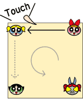雪山で吹雪きに巻き込まれてしまい、何もない山小屋に四人。真っ暗で寒い。このままでは寝てしまう。動き続ければよいのだが、真っ暗なのでテキトウに動いていてはぶつかってしまう。それに、ずっと動いてばかりでは逆に疲れ果ててしまう。そこで四人は山小屋の四隅にそれぞれ立ち、一人が端まで歩いて、その先の端にいる一人にタッチする。場所を交代し今度はタッチされた人が次の端まで歩き、また次の端の人にタッチする。これを繰り返し、休みつつ、運動しつつ、ぐるぐると山小屋を回り続け、吹雪がやんだ朝をむかえた。
こうして四人は無事救助された。
（ ´Д⊂ヽ 怖〜〜〜〜〜〜〜〜〜！！
怪談です。
どこが怖いのかわからない人は、実際に四角い板の上にでも消しゴムでも使って試してください。
◇
blogサービスをいろいろ試してみた結果、やっぱり自前でやりたいなあと思うようになった。
blogサービスの機能とかにさほど不満があるわけでもない。どうせ基本的な機能しか使わないし、見た目のカスタマイズだって、まあまあ問題ない。
ただ、放りっぱなしって状況がどうにも・・・自前でやってれば、もしそのblogツールから乗り換えることがあったとしても、流用ききそうだからだ。貧乏性なのかなあ。
そして、ある程度やってみて、blogサービスを利用すると本当に簡単で良いのだが、その構造がどうなっているのかを理解したいというblogツールそのものに対する知的好奇心がちょっとばかしムクムクとせり上がってきたからだ。
というわけで、サーバー動作タイプのブログツールを調べてみた。
blogといったら、どいつもこいつも「Movable Type」ばかり・・・かと思っていたがそうでもないようですね。
Weblog/blog/ブログ ツールリスト
なんだかいっぱいあるぅー。
ざっと見ても国産系は日記ツールにblog的機能を追加して発展していったっぽい感じだ。nicky! などはまさに高機能絵日記。日本製で特に人気なのはtDiaryだろうか。「はてな」みたいな感じができるようだ。
海外ではやっぱりblogツールの代名詞ともいうべきMovableTypeがダントツかもしれない。とにかくユーザー数が多く、ノウハウも充実、なにより高機能。ただ、意外だったのは静的生成だってことだ。 あああ、でもやっぱりblosxomですよ！カタカナで書くと「ブロッサム」。オレはブロッサムを使ってるんだーと思うとゾクゾクしてきます。
てなわけでblosxomを実験中。だいたいMovableTypeはDBないとダメなので、まずはサーバ選びから。その点blosxomはPerlだけで動くので、お試しにはちょうどよい。無料サーバでもPerl実装してCGI可ってのもけっこうあるからね。
しかし、いざやってみると・・・・わけわからーーん。
blosxomとblosxom starter kit の違いがようやくわかった。blosxomそのものは、テキスト整形するだけの本当に基本的なものしかなくて、それを一応blogとして機能するくらいにイロイロ用意して設定してあるのがblosxom
starter kitなんですね。
どれがどんなファイルで、かつ書いてあることの「言葉」の意味がよくわからない。
えらい時間をかけてconfig.cgiを正しく設定して表示ができるようにはなった。だが、どこをどういじればカスタマイズできるのだろう？足りない機能を補うプラグインはどこに？そしてどうやって設定する？
そもそもフレーバーってなんだ？（多分他でテンプレートとかスキンとか言われてるもののブロッサム風言い回しなんだとは思うが、どのファイルがそれなのかよくわかりません。）同じ名前で.htmと.htmlがあるのはなぜ？
そもそもUNIXもPerlも全然わからないので、ちょいキツイけど、まあトライ＆エラーでやってけばなんとかなるかな・・・・・
うう、MovableType簡単そう・・・
言葉の話2。
「ある」のに「ない」もの。そんなものも言葉にしてきた人間ってすごいね。
例えばドーナッツの「穴」。お菓子の部分を「実」と借りに呼ぶ。
実＋穴＝ドーナッツ となるが、
ドーナッツ−実＝穴 は成り立たない。
「ここにドーナッツがある、私は実を食べるから、穴は君にあげよう」
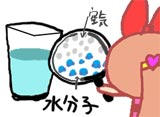コップの中に水が入っている。「水面」を挟んで上半分が空気で、下半分が水。
さて、この水面の厚さは何ミリか？
どんどん拡大して極限まで近づいてみよう。どんどん、どんどん。
分子、原子レベルにまで近づき、気が付くといつのまにかあったはずの「水面」は消えてしまった。いったいどこへいってしまったのだろうか？
「近づきすぎると大切な物は見えなくなるものよ」
と書くとちょっと文学的。
水面は「境界」という概念なので、もともと「ない」ものを「ある」としただけなので、実体が無いのは当然かもしれない。
しかし本当に「ない」ものなのだろうか？
さて、ここで視点を変えてコップを上から見てみよう。「ない」はずの水面のはずだが、「面積」は確かに存在している。形として存在しているのに、実体は存在していない。「ある」のに「ない」。「ない」のに「ある」。
・・・・と、言うように「言葉」を駆使すると簡単に詭弁ができる。どのへんが詭弁かどうかを考えてみるのも楽しい。しかし、方法論を科学的（数学的）なものに変えて厳密にやってみたとしよう。すると時に詭弁以上に詭弁としか思えない不思議な結論が出たりする。これもまた楽しい。
例えば、「虚数（i）」とういものがある。マイナスとマイナスをかけるとマイナスになるという数（実数では当然プラスになる）。もうちょっと正確に定義すると「自乗してマイナスの値となる数値」。実在しない想像上だけの数値。
しかし、これを「ある」ものとして運用すると、高次方程式がうまく解けたりする。
机上の空論？ しかし、この虚数を使うことによって実際の物理法則が証明され、その理論の応用が実社会にも適用されてたりする。電子レンジとか。
「ない」はずのものが「ある」ることで、世界は出来ている？
（科学とか数学に詳しい人はわかってると思うけど・・・・これも詭弁）
そこで、「愛は幻想かもしれないけど、愛（i）があれば、解決するよの」
と、書くと文学的。ららら〜、iが世界を〜動かすの♪
こういうロジックパズルというか詭弁の論理をマンガにするとパタリロになる。
えーと要するにですね、「パタリロ77巻」をやっと買った〜！と言いたかったわけですよ。長い前置きでした。やっぱ魔夜峰夫はおもろいね。今回は詭弁ネタはあまりなかったけど（笑）
間者猫も復活して活躍してるんだから、プラズマも復活せぬものか。
やはく「パタリロ家政婦」も単行本にならないかな〜〜っと。
言葉の話。
音楽やってる人にいろいろ聞いたときに「音を曲げる」「音を傾ける」といった表現が出てきて、ああ言葉って面白いなあと思った。別に音にかぎらず、「風を切る」とか、「怒りをぶつける」とか、本来「物」でないものに対して、まるで「物」のような表現を使うことはたくさんある。
「状態」や「概念」に身体的感覚を用いることによって、よりニュアンスが伝わりやすいというのは、やはり体という感覚器官あっての思考であって、体は単なる器ではないということなんだろう。
とも言えるが、もう一つ、「言葉」の性質というか「言葉」の呪力のせいでもあると思う。
「心」という言葉があるが、「例えばロボットには「心」がない」とか、「心が傷つく」とか、まるで「心」というものが「存在」するかのごとく使われ、多くの人が「心」というものが「ある」と思っていることだろう。
だが、「心」なんてものはない。存在しない。存在するなら必ず質量や物質をともなうはずであるが、そんなものは見つかっていない。
それも当然で、「心」というものは「脳」が作り出す「現象」であり、「脳」が持ってる「機能」だからだ。
「心臓」の機能が「血液の循環」であり、そして「血液の循環」という現象（状態）を生み出すが、では「循環」という物は存在するのかというと、無い。それと同じことだ。（まあ、ここらへんは本からのイタダキですが・・・）
しかしながら、何故人は「心」が「ある」と思ってしまうかというと、やっぱり「言葉」になったからかなあと思う。どうも人間は「言葉」というか「名前」をつけると、それが例え抽象概念であってもどんどん、擬物化（擬人化もあるかな？）してしまう傾向にあるようだ。これこそが言葉の力だろう。
そしてやっぱり、「見たり聞いたり触ったり」感覚器で感知できるレベルにまで下げないと落ち着かないってことかもしれない。
分かりやすいものに、「妖怪」という概念があって、例えば「カマイタチ」などは突然スパッと衣服などが切れる「現象」、すなわち「怪異」だったはずなのに、気が付けば動物になっている。そこまで落ちてやっと安心できるのだろう。
ここから「薔薇の名前」や「不立文字」にまで展開すると、ちょっと面白いんだけど、実はこれは単なる前置きで（長かったけど）そんな話をするんじゃなくてだね、「名前」というか「タイトル」はあなどれんなあと。
いや「バットマン・ザ・フューチャー」ってあるじゃない。原題は「BATMAN BEYOND」。気取ってビヨンドと言ってるほうがカッコいいので、得意げに「ビヨンド、ビヨンド」っていってて、なんで日本はこんな間の抜けたタイトルにするかなー、ビヨンドのままのほうがカッコいいのにと思ってた。
きっと、ビヨンドって単語は日本じゃなじみがないから 「フューチャー」にしたんだなきっと、うんうん、とか思ってた。
でも、Beyondって言ってるのってアメリカだけっぽかったりするんですよ！
オリジナルはは「BATMAN BEYOND」ですが、どうも他国では「Batman of The Future」という題のようです。
イギリス
Toonami＞http://www.toonami.co.uk/index.html
amazon.co.uk＞ http://www.amazon.co.uk/exec/obidos/ASIN/B000056WNU/
ドイツ
amazon.de＞http://www.amazon.de/exec/obidos/ASIN/B00004T0IU/
フランス（Batman - La re'le`ve）
.amazon.fr＞http://www.amazon.fr/exec/obidos/ASIN/B000059X9C/
ブラジル（Batman do Futuro）
http://www.cartoonnetwork.com.br/watch/tv_shows/batmanbeyond/
うーむ、コレ見ると、日本だけ「フューチャー」ってわけではないみたいですね。むしろ本国以外は「Future」の題に改題している。英語圏であるイギリスですら！（オーストラリアもそうらしいが、オーストラリアのToonamiって日本アニメばっか・・・）
あれかな、「Beyond」って単語は実はあんまりイイ意味がないのかもしれない。オリジナルはもうそれで作っちゃったから仕方がないけど、他国へ輸出する場合は「Future」にするって決まりがあったのかもしれませんね。ごめんよ日本CN
、ちょっと誤解していたかもしんない。
おまけの言葉の話。
最近海外サイト見てよく目につくけど、よく意味の分からなかった単語。「aka」。赤？
正しくは「a.k.a.」と書くようだ。文脈から「注釈」？ってことかなと思ってたんだけど、けっこう頻繁に目につくようになったので調べてみた。
a.k.a = also known as（別名〜、またの名を〜）
ふーーーむ。なるほど。
Batman of The Future(a.k.a Batman Beyond)という風に使う。
ヽ(´ー｀)ノ また一つオリコウになったよー。
土曜は久々の朝までチャットをやってしまいました。
しかし、自分はそうとうな夜型だと思ってはいたんですが、まさか毎日朝10時に寝るような人がいるとは・・・・負けたっっ！！。自堕落王の称号はKさんに差し上げます。
それと、「親しき仲にも礼儀あり」ともうしましょうか、メールといえどもあまり浮かれて書くのは注意しましょう。パーソナルコンピュータとはいっても、必ずしもパーソナルなわけではなく、家族で、かつ同じメアドで使用している場合だってあるのですよ。あああああああ。
下品なオレのバカっ。
◇
パワパフの単独CM見た〜。
どうもショートとロングの2バージョンがあるみたいですね。ロングのほうがレアっぽいので、見てない人はしっかりチェックだなもし。なめくじバブルスとか、たんつぼブロッサムとか・・ええなあ。（ええんかい！）
KNDの第一シーズン最終話。
やべ、ちょっとジンときちまった。ウノくんが大人になってしまって、「仕事をみつけなきゃ・・・」というのがなんとも。私は早く大人になりたかった子供だったので、子供時代にはさほど哀愁は感じないんだけど、世界が小さいということはそれはそれで幸せなことなんだなと。そーいや、前にも「子供のままの大人」が出てきたね。
ま、それはともかく、一瞬だけティーンエイジ・サンバンちゃんが見れたのはよかったー。むはっ。
（なんかもっと考察めいたいいこと書こうと思ってたのに結局ワシはこういう人間ですか）
それにしても、話の展開といい、ラスボスみたいなブラボー父さん登場とか、まさに最終話みたいな作りになっているのが驚いた。エピローグのようなシーンがあるのもカートゥーンでは珍しいこと。日本だと、もうひと余韻あるべきところで、ブチッと終わるドライさがカートゥーンではよくあることだからね。それに、いままで登場してきたメカが再登場ってことで、ホントに最終回っぽい。
調べてみると、この第一最終話が流れてから、第二シーズンが放送されるまで7ヵ月かかっている。
やはり、当初は第一シーズンのみで、その後は人気があったら続行という予定だったのではないかな？まあ、人気があったので続行されたわけだが、そこで終わってもいいように作ったものなんだろう。これもどこが終わりでも始まりでもない従来のカートゥーンとは違う感じだ。この作品が革命的というわけではないが、全体としてアメリカアニメ界の雰囲気が変わってきているのは確か。こういうことを言うのは今更なんだけど、実際に作品でその感触を感じると、やはり実感の度合いが違うものだ。
どうやら第二シーズンでもその最終話は30分エピソードで、タイトルからして「Operation: E.N.D.」
これまたウノくんがらみで気合い入った話っぽいので、ものすごく期待だ。
2006年には、ナンバー0が登場するKNDの映画も予定されているようだ。（ビデオ映画だとは思うが）
それよかねー、第二シーズンの3番目の話がきになるのよーーー。
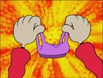「Operation S.U.P.P.O.R.T」
ナンバー1とナンバー2はナンバー5の家に遊びに行ったときに・・・
女の子の秘密兵器をハッケーーーン ( ･∀･)／
ナンバー5のねーちゃん登場みたいです。
KND風にどんな話になるのかとてもドキドキ。
・・・・・また下品なことを・・・オレってば・・・・ああ、ジェントルマンになれる日はくるのでしょうか。
◇
星野 之宣「ムーン・ロスト」読了。
某所でその名が出て、雑誌で連載してたのは覚えてたけど、単行本になってるとは知らなくて、あわてて購入。
うーん、やっぱり星野SFはええですね。実は星野 之宣の伝奇ものはそんなに好きじゃないんだ。説明的すぎるとこと独特のハッタリが逆に穴だらけに見えて、いまいちだった。でも、SFのほうはすっごいすき。
巻末の解説を読むと、人間ドラマやキャラクターも誉めてたけど、自分にはどうにもこの人のキャラクターや人間ドラマは古くさくてそれほど思い入れはない。
それよりも、状況設定やSF的ハッタリに痺れる。
SFもののマンガはそれなりにあるけど、結局のところバトルものだったりして、設定で真っ向勝負してくれるものはほとんど無い。SFマンガとしては貴重だよ。
地球に迫ってくる巨大隕石。もしこれが落ちれば人類は滅びる。破壊しても結局は同等の質量が落ちてくることには変わりなく、まさに打つ手なし！だがそこで、最新理論を駆使して超小型ブラックホールをぶつけ、質量ごと消滅することに。だが、計算の違いからブラックホールは「月」をも消滅させてしまった！
最愛のダンスパートナーを失った地球は（こういうロマンチックな言い回しはさすが）月の潮汐力が無くなったせいで世界的規模の大洪水、そしてなんとポール・シフトしてアメリカが南極に！！
往年の名作ブルーシティを思わせる大ハッタリのきいたSF的アイディアには、それだけで感動。
不安定な自転をし、不安定な気候となった地球を再生すべく、「新しい月」をもってくる！という発想もスケールでかくて最高です。これがまたうまく神話と絡めていていいんだよね。このへんは星野 之宣の真骨頂といえる。
よく、「凄さ」を表すために月とか惑星とかを破壊したり、隕石やらコロニーやら落としたりするものが多いけど、それが本当はどんなことなのかよくわかる。どかーん、はい星が一つ消えました、どころじゃすまされんのですよ、宇宙は。そのあまりに巨大な質量の存在にドキドキし、うっとりします。
惑星の衛星としては他に類をみないほど巨大な衛星「月」。それなくして地球に生命はありえなかったんじゃないかと思うと、いつもの夜空に輝く月を見ていてもまた違ったものに見えるから不思議です。
知識とは知恵ではなく、世界を開く扉。
・・・って、今日は雨で月が見えないよ〜〜〜。
ドーラといっしょに大冒険
こちらのBlogを読んで。
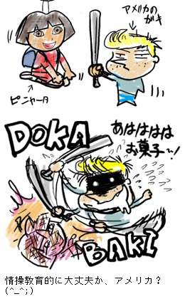
てなわけで、ティーン・タイタンズが11月22日から放送と公式発表。いよいよ！
先行試写会やったりと力入ってるみたいなので、スパイダーマン以上の特番を期待しちゃうね。
でも、なんでWebでは応募できなくて、月刊Sky PerfectTV!からでないといかんのか？と思っていたら、なるほど、試写会は「ぴあ」の試写室を使うからなんですな。（月パーはぴあから刊行）
月パーを見ると、カタカナ表記でのタイタンズの名前は「スターファイヤー」ではなく、「スターファイアー」。「レイヴン」は「レイブン」。・・・まあ、レイベンよかいいか。スターはの説明はちゃんと「タマラン星から来たお姫様」と。
しかしですよ・・・・・10月にはパワパフの新作だってのに、この扱いの低さはなんですかーーー！
「烈火の炎」のスペース枠なんかいらねーから、そこに「秋の新作コレクション」を入れろや！ボケー。日本CNの広報担当は正座して反省しろっ！
ブリスターにHTFの新作フィギュアが入荷とな。カットアップ版はさすがHTF。
なぬ、まんがの森本店でミニョーラの原画展とな？これはちょっと見にゆきたいぞなもし。
日本のマンガ家さんたちのヘルボーイ絵も気になりますね。この人たちミニョーラファンだったのか・・・なかなかに意外な人もまじってるなあ。個人的にみなもと太郎とＳＵＥＺＥＮが気になります。（こっそりヤダモン描いていてくんないかな・・・）
前から気になっていたwebブラウザ「Firefox」を導入してみた。
MacはOS9なのでダメだけど、win機も持ってるのでそっちに。
特にどこがスゴイのかよく分からないけど、ちょっと嬉しい。
機能がどうだっていうことより、純粋にこのブラウザシンボルがカッコいい。それだけの理由。
同じとこから出してるメールクライアントのThunderbirdのシンボルもカッコイイ。
IEコンポーネントのブラウザを含めると、いまや沢山のブラウザがあるが、今まで見てきたなかでは、このアイコンが一番好きだ。動物ってとこがたまらない。
アクセス解析を見てみると、ほとんどがIE だが、たまに「Mozilla」の名が見える。これがFirefoxだろうか？
タブレットの調子が悪いよー。
なんか最近「Intuos3」ってのが出たみたいだし、タイミングいいからいっそ買い換えようかしらん？サイズ的には一番ちっちゃいので十分だし。むしろそのほうが自分には使いやすい。
けっこう普通の操作でもタブレットを使うことが多いので、小さい方が移動距離が少なくて高速でいいんだよねー。
うか2さんとこの日記で紹介されていた、スチューデント・アカデミー賞金賞作品「REX STEELE」ってのがちょっと気になります。
60年代のピンナップアートのようなレトロモダンなキャラクターとかええですねぇ。ブルース・ティムとかすごく好きそうだ。
スチューデント・アカデミー賞って聞いたことなかったけど、学生対象のアカデミー賞ってことでいいのかな？調べてみると、モンスターズインクのピート・ドクターとかも過去に受賞してるみたい。しかし、こいつらも当たり前のようにカルアーツ出身か・・・・
カルアーツは本当に新世代のアニメーターを続々排出しているんですなあ。今やアメリカでアニメーターを目指すならカルアーツにゆくのが常識って感じになってるのかしらん。
ところで、REX STEELEってナニで作られてるんだろ？見た感じFlashっぽいな。その後いろいろ加工してるとは思うけど、アメリカではwebコンテンツツール以外にも、アニメーションツールとしての方法論が確立しているのかもしれない。日本でも最近のアニメスクールでは導入してるのかな？
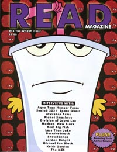
ATHFやらのインタビューが載ってるというので最近購入した（正確には購入してもらった。多謝）READ Magazine。
文字ばっかりなんで、読み始めるモチベーションが激しく低かったけど、なんとか読んでみると、ATHFはMacG5でフォトショップとアフターエフェクトを使ってシコシコと制作しているようですね。一枚絵が横に平行移動したり、揺れたりするだけのチープな作りなんで、むしろ「やっぱり」という感じ。
一本作るのに約10週間。といっても、複数を同時進行させてるみたいだし、普通のアニメ制作よりはるかに制作人数が少なそうなんで、比較できるものがなさすぎて、この数字をどう判断して良いかさっぱりわかりません。（そもそもアニメ制作ってどのくらいかけて作るものなんだろう？）
クリエイターの一人Matt Maiellaroはダークマンとかヘルレイザー3とかバスケットケース3とかのB級ホラー系をうろうろしてた人みたいで、こいつをはじめここのスタッフは他のアニメのスタッフとはかなり毛色が違いそうで面白いな。
インタビューにしても、
「あー、だれソレ？」「んー、オレ知らない」「もう忘れたよ」「こいつのかみさんが嫌い」とかだらーっとしたけだるい感じがたまりません。
◇
TeenTitansのDVDがもうじき出ちゃいますなあ。（28日）10月に日本上陸しなかったので微妙〜。
特典映像は、パフィーのミュージッククリップや、冬に始まる「パフィーのアニメ」の予告映像のようです。あと、「Find The Remote」ってゲームも付いて来るみたい。
ついでに、TTアクションフィギュアの第二弾が。
テラ＆BB ってのは分かるけど、雷兄弟イラネー。こんなん入れるくらいならJINX やお姉さまを！
・・・でも、このシリーズから出るくらいなら出ないほうがマシかも。
◇
夏に出したカートゥーン大百科本「TOONGUIDE1」がまんだらけでも委託通信販売されたみたいです。興味ある方はどうぞよろしく。
◇
きゃーーー。メールでステキなイラストのプレゼントが！
た、たまらん〜〜〜〜〜。どーにかなりそう。 宝物、宝物。こんなとこでなんですが、すっごく嬉しいです！ありがとー。
前にヒタキさんにお会いしたときにお借りしたW.I.T.C.H.コミック版。（といっても、まだコミックしか無いようですが）
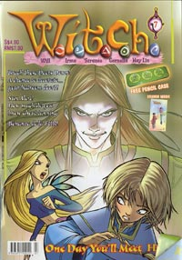
ディズニーイタリアがプロデュースする魔法少女戦隊もの。まあセーラームーンみたいなもの。
といっても、英語ですがこちらはマレーシア版。なので、本国版とは表紙とかちょっと違っていたり、読者ページの投稿とか写真とかがちゃんとマレーシアの女の子たちになってます。コミック素材を本国からもらって、編集は現地でってことかもしれません。
フルカラーでサイズもA5なんですが、毎号「おまけ」がついたり、星占いのページがあったりと、雑誌という作りになっています。日本のように複数連載ではなく単独タイトルでというのが大きな違いですが、ノリとしては「りぼん」みたいなものでしょうか？
さて、さっそく読んでみると・・・・
うむ、これはまさしく完全に少女漫画。ちょっと辛かったかも〜（笑）
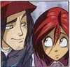
主人公格のウィル（Will）ちゃんは、自分の気持ちをうまく表せなかったり、ファッションに悩んだりと、読者の共感を得やすいタイプになっていて、それなりに人気ありそうですね。
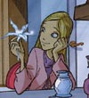
W.I.T.C.H.の綺麗どころのコーネリア（Cornelia）。ちょっと大人びた感じの娘さんだけど、今回の話で運命の人との出会いを果たしたご様子。うーんラブロマ。
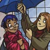
眼鏡っ子のタラニー（Taranee）は、なにげに彼氏もち。あなどれません。（でもパパは反対？）
で、なんか全然男っけのないおちゃらけコンビ、イルマ（Irma）とハイ・リン（Hay Lin）。この二人、いっつもつるんでバカやってたりして、けっこう楽しい。この二人なんかいいかも。友達に欲しい。イルマさん、眉も体型もやや太め。一方ハイ・リンはあっさり顔のスレンダー（なにげに黒髪の超ロングヘア）。
変身後は大人びたというより、化粧しましたって感じで、変身前の普段着姿のほうが好きかな。
セーラームーンやらその他の変身少女ものの影響か、
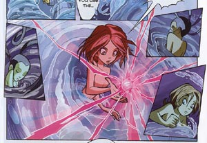
変身中はすっぽんぽんになります。もう、これくらいはどうってことないっていうか、世界的にもすでに「お約束」になっているのか、なかなか興味深いですね。もし、これが本当にディズニーがアニメにしたらどんな風になるのか楽しみです。
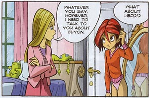
こんなシーンも。エロいというより、「かわいい」。そんな認識が世界にも広がってるですなあ。
私が読み続けるにはチト辛かったW.I.T.C.H.ですが、日本からの輸入ではなく、海外でちゃんと「少女もの」というジャンルが確立してきているのだと実感したのがなによりの収穫。
なにしろ、あのDCコミックですらもうじき「エロイカより愛をこめて」の英語版を発行するくらいですからね。コミックは男の子やマニアだけのものではなく、女の子も読み始めたってことでしょう。海外では未開拓な分野だけあって、これからどんどん増えそうな予感。
とはいっても、マレーシアでは普通に日本の漫画もガンガン入っているみたいで、そんなのはいまさらなのかもしれませんけど。
こちらが、そのマレーシア版を出版したChuang YI社
日本の漫画は中国語に翻訳され、ほぼリアルタイムに刊行されているようです。
なにしろ「覇王愛人」とかも刊行されてるんだから、いまさら、いまさら（笑）
KNDをひととおり見て。
もともとは第1話に挟まっていた「Kenny and the Chimp」の方がメインで、KNDはその世界観の中にいるサブキャラみたいなものだったらしい。＞■
だからKids Next Door（隣の子供達）なのかも。
しかし、こいつらある意味テロリストだよねー。破壊活動しまくり。今までの多くのヒーロー達は秩序・体制側だったのに対して、とことん反社会的。もしバットマンやスーパーマンに登場したら、こいつらは普通悪役だよ。トイマンとかそんな感じじゃん（笑）
でも、それでもちゃんと親と一緒に遊園地へいったりと、独立しているわけでもなく、そのへんが子供。なんちゅうか「ごっこ遊び」を極端に肥大化させたというか、子供が夢見る妄想をそのまま描いたというか。小道具や大道具のガジェットも身近にあるもので構成されていて、ここまで徹底しているのは珍しいかもしれない。
そんなわけで、対象年齢がやや低めなので、ちょっと大きなお友達には少々ツライ回もあるが、キャラクターと物語でうまく引っ張ってくれるとけっこう楽しめる。
ハマグリ大砲の回とか、リジーとナンバー１の回とか、シラミの回とか、ハエの回とか、大人怪人と直接対決する話より、こういうメンバー間でドタバタやってる回が好きだな。
あ、でも、会社で冥王星まで飛ばされちゃう回とか、レインボーモンキーの回もかなり好き。クキちゃんの出番多いし。（タケコプター状態のナンバー3、最高！）
会社のデスクの引き出しにおさまるワラビーくんもいいかも・・・
これがショタというものかも！と、ちょっぴりクラっときた。
ただ、日本公開前から海外のファンサイトを見ていると、カップリングとか、恋バナファンフィクとかよく目に付いたので、そういう感じのエピソードとかあるのかな・・など漠然と思っていたが、見てみるとまったくないことにちょっと驚いた。
だが、にもかかわらず、日本でも少しそんな気配が出てきていて、そのへんの感覚というか感じ方、楽しみ方は海外も日本もそう変わらないのかもしれないと思った。
そのあたりの想像の広がり方はわからんでもない気もしないでもないでもなない（どっちや？）
私がなんの論理性もなく、モジョ×ブロ とかカップリングを思い描いているのと同じだろう。
キャラクターの本名もそれぞれ公開され、個性もハッキリしてきて、がぜんキャラの動きが良くなってきて、さあこれから！ってとこでリピートなのは残念。
カートゥーンでは第２シーズンからが面白いと言われているだけに、残りがちゃんと来るかどうかが心配・・・って思っていたら！！！！
ゼロセットさんのKND感想日記に、驚くべき書き込みが！
エリートKNDのナンバー274の声優さん本人が登場かよ！！私も驚いた！これがインターネット・・・やっぱすげえ世の中になったものだ。
すでに26話まで収録されていて、好評のため、残りエピソードまで収録決定したとのこと！
しかも、早くも第2シーズンが開始されるみたいです！マジー。274も再登場だよ。
そんなナンバー274の中の人「岸本 周也」さんのサイトはこちら＞■
（誕生日が同じなんで、なんか急に親近感が・・・・）
出社したら今日はまるで休日出勤のようだった。よくカレンダーを見てみたら今週は連休モードだったのね。先方が休みだとか、もう帰ったとかでバカバカしいからとっとと帰る。こんな時間に帰るなんてどんだけぶりだろう。
今日はスカパーの無料開放日。契約してないチャンネルも見ることが出来る。
お目当てはモンドTVの平成極楽オタク談義#8。
ゼロセットさんの感想日記では同人誌「トゥーン大好き！」とほぼ同じといったとこのようだが、その時とは違ってティーンエイジロボットの話題まで出るそうなのがめっさ気になります。録画で見るかと思ったけど、リアルタイムで見れそう。と思ってチャンネル合わせてみたら、モンド研究所とかいう番組で「吹き替え声優大辞典」なるものが。面白そうだからちょっと見てみよう。
で、その感想。
モンド研究所のほうでは、「吹替声優大辞典」といいつつ、ゲストの羽佐間道夫と山寺宏一とのトーク番組となってました。この二人良く喋るんだこれが。ひたすらこの二人が喋っていたって印象が・・・
まあ、細かいことは司会である、とり・みきの出した「吹替映画大百科」を読めばいいことなので、TV的にはこれでOKかな。だって面白かったから。
二人とも芸幅が広いうえに、落語好きって（山寺はもと落研）とこもいいかんじ。
しかしですよ、羽佐間道夫と言ったら、スタローンとかだけど、そうじゃないよね。
羽佐間道夫と言ったら宇宙怪人ゴーストでしょ！
あー、ゴーストも復活しないものか。
オタク談義
こちらはなんか、ダラダラとそのへんのファミレスかなんかでダベってるような番組。まあ、そういうコンセプトなんでしょうね、もともと。それはそれで良いものなんですが、観ていてなんかとても、じれったかった。（一応パワパフムービーの映像も流れました）
基本的に岡田氏が海外アニメ事情をよく知らないので、岡田氏に説明するような流れになってしまっていて、そのためどうしても「〜とかね、やつらってよくわかんねーよなあ（笑）」のような笑いオチになってしまうのが残念であり、もどかしかった。なにしろ、岡田氏のもってるイメージが古い古い。
何度TVにむかって、「イヤ、でも今はこんなに変わってるんですよ！」「ちょいそのへんニュアンスが違う！」とか言いそうになったことか。
まあでも、岡田氏を日本のオタクの代表とするならば、やはりそういう認識と現状なのかもと思ったりもした。確かにティーンエイジロボットを眠田氏が言葉だけで説明するのは難しかったようですねえ。いったいどんなモノを想像していたか気になるが、多分全然別なものを想像していたんだろうなあ。米国版「まほろまてぃっく」って（笑） しかし、改めてそう比較されると、日本のアニメってとことんウェット。日本風のテクニックやニュアンスが導入されても、カートゥーンのもつドライさに新鮮さを感じ惹かれるのかもしれないと、自己分析とかしてみた。
新しいものはともかく、アートアニメ関係や古いカートゥーンに関しては唐沢氏はさすが詳しかったですね。テックス・アヴェリーは高い作家性ゆえにもうひとつメジャーになりきれなかった、でも日本人はマイナー好きだから評価は高い。などのくだりはちょっと面白かったなあ。
その唐沢氏が注目しているカートゥーンがサムライジャックだったのは驚き。（アートアニメのような感覚で見ていたのかもしれない）
それと、「ウサギ用心棒」の名が出た時はもっとビックラこいた！そんなんまでチェックしてたんですかー！ウサギ用心棒好きとしては大いに喜ぶ。でも、それってカートゥーンじゃなくてアメコミです。（でもこれを見ている視聴者の99.999％くらいは知らないと思うので、どっちでもいい問題かも）
一応ニンジャタートルズにちょこっとゲスト出演はしたけどね。あとアニメ化したのはウサギ用心棒ではなく、スペースウサギのほう。
一応岡田氏はオタクというよりむしろSF者なので、クローン大戦だけはチェックしていた様子。
しかし、シメの言葉が「たまにはカートゥーンネットワークも見ましょう」というのが、さすが地上波にはないCS局ならではのセリフ。
The Teenage Roblogでは前からエミー賞受賞の報があったけど、どうもあそこの文章はイマイチ軽くてしっくりこなかったとこがあったんだが、最近エミー賞情報がちらほら出始めて、本当だと実感。
ティーンエイジロボットの背景美術でSeonna Hongさんがエミー賞受賞。おめでとー！
Seonna Hongさん自身のサイトのニュースでもでかでかと。
スカパーのガイド誌を読む。
ニコロデオンは新番組はなし。ってことでティーンエイジロボットの10月上陸はないようだ。
そもそもあまり信用してなかったので、やっぱりなあ、という感じだ。自分の予想では12月くらい。それより遅れると、ちょっと不安になるけど。
TeenTitansも10月には来ないし、PpG新作でもロックオペラはやらないし、PpGコミック#54にイマジナリフレンズのミニコミックもなし、と予定とはずれ込むものなのですよ。
だいたい自分の仕事を見ていてもそれはよくわかる。
（だから、日本の新PpGDVDの中止は痛い。中止はないよなー、まったく）
◇
怪獣バトル（太平洋の釣り橋日記）
一部では有名な「アレ」がついに日本のメディアでも取り上げられるとは！と、思ったけど、よく見たらニュースソースはHotWiredだった。純日本メディアではないか。
「マルチメディア・イベント『怪獣バトル』、人気はうなぎ登り」の記事を読むと、こんなくだりがある。
「グッズ購入客の数は実際、女性のほうが多い。男女どちらにもアピールする魅力は、筋肉野郎がただ殴り合うようなものではなく、マンガっぽく、マニア向けで知的だからだ」
知的かどうかはともかく、キャラクター化が進むと女性に受け入れやすくなるんじゃないかと思った。こちらのカンバッチなどまるでビックリマンみたいだ。
怪獣大戦闘の公式サイトはこちら。あんなきぐるみでけっこうな技をかけるさまはちょっとスゴイかも。
◇
なにやら今月の22日にあのエルリックのコミック（鋼の錬金術師じゃないよ）がDCから出るみたいだ！
表紙絵はあまり好みじゃないし、むしろダークホースあたりから出るほうが「らしい」気もしないでもないが、かなり気になる。
今の時代こそムアコックの復刻を！タネローンを求めて！
私はトールキンの指輪物語より、ムアコックのエターナルチャンピオンシリーズのほうが好き。アリオッチ！
そういえば、スタチューでエルリックとかちらほら見かけてたけど、アメリカではエルリック復活ブームなんてあったりするのだろうか。ストームブリンガー！
このバットマン、アゴとがりすぎ。
KNDを見て。
もうじきリピートに入るようだ。今回は1シーズン分だけか。ダックドジャースといい、ムーチャルーチャといい、最近は1シーズン分ずつをちまちま流す方針のようだ。そういえば、ホームムービーズもちまちま1シーズンづ追加されてきてたっけ。一気に流すより、少しづつ流して反響をみながら残りを・・・といったところだろうか。
それはそれで良いのだが、「その後」がなかなか続かない場合がけっこう多いので、若干の不安がのこるなあ。
スパイダーマンがあれだけ一気に流すのはここ最近では珍しいパターン。この時期に一気にやっとかないとキツいという判断なのかも。一回休止すると二度と復活しない気がする。大丈夫か？スパイダーマン。
ナンバー5の声にも慣れてきた。人間の適応力とは恐ろしいものだ。
まあ、それもあるが、初回のころと比べ、「女の子」であることを意識した声のつくりやセリフになっていったフシもある。声優がんばってるなあ。
それでもやはり撮り直してほしいという思いはある。無理っぽいけど。第二シーズンが始まる前に一回休止して、復活してみたら声変わっていた！となると個人的には嬉しい。でも、必ずしも原語を聞いてる人ばかりではないので、混乱をさけるために変更はないんだろうなあ。
ところで、KNDってなにげに5本指だったのですね。
ビリマンが再開したことから、小悪魔が出てくる番宣CMも復活した。このシリーズはけっこう好き。
マンディの爪をとぐグリムの図はええものです・・・・
番宣CM復活ついでに、再び言おう。
「埼玉県に浦和市は存在しません！！！」
だから合併して「さいたま市」になったんだってばよ！
ビリマン休止中に「さいたま市」になったわけではないですよ。この番宣が初めて流れた時（去年）からとっくに「さいたま市」でした。うーむ、もしかしたら制作者の合併反対のメッセージなのかも。
PpGコミック#54だが、DCの予告には「Foster's Home for Imaginary Friends」のコミックが載ると書いてあったのに、載ってない。どーいうことだコラ！
結局掲載はPpGコミック #57にと、先延ばしになったようだ。やはり予定は未定なのですね。
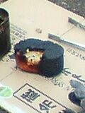
それはご飯というにはあまりにも黒すぎた。
黒くぶ厚く重くそして大雑把すぎたそれはまさに岩石だった。
バーベキューをしたのですが、飯ごうで炊いたご飯がとんでもないことに。
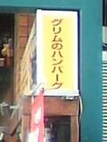
原宿にある「グリム」という名の洋食屋さん。残念ながら、オムレツ定食は無かった。
珍しく早くPpGの新刊をゲットできた。DCのコミックにジュニア向けのブランドが出来たみたいで、当然パワパフもそれに組み込まれることとなって、今月から表紙のレイアウトやロゴが変わった。
「CARTOON NETWORK BLOCK PARTY」や「TeenTitans Go!」やらもジュニアブランドになるのはわかるが、JLUのコミック版までそうだとはねえ。基本的にアニメのコミカライズは全部ジュニアブランドになるみたい。
地道に寝てないので、かなり眠くなってます。
今寝ると、夜中に目がさめそう。
最近気になってる海外の声優さん。
Grey Delisle
マンディやガストリーの中の人。この人ベテランなのか、けっこういっぱい出てる。
このあいだのKNDのリジーもそう。
日本未公開だけど、
The Fairly OddParents のヴィッキー。
Danny Phantomのサム。
Xiaolin Showdown のキミコ。
なんか気になるキャラばかりやってるなあ。
Danny PhantomのサムのフルネームはSamantha Mansonと言うのか。いかにもゴスな名前。
最近キャストやスタッフクレジットに異様に目がいくようになってきてます。オタク化が進行したってことかなあ。
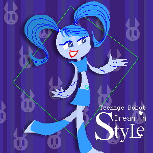
また一歩野望に近づいた！
あこがれの thweattさんとこにお絵かきしてきた〜。
もうずーーーーっと前から、描きたいなあと思い続けてました。お絵かき掲示板を同じタイプにしたのも、あこがれから。同時に初の海外サイトでのお絵かき。
そう、いつかはやりたかった海外サイトへの進出。英語がダメダメなので、会話はダメだけど、絵なら・・とずっと思ってました。最近なにかと海外からのカキコミやらメールやらあって、必死で返答してきたかいあって、短い文ならなんとかなるような感じになってきた（と思う）ので、ふんぎりつくようになったのかも。
（ああっ！ thweattさんとこのお絵かき板がまた大変なコトに！）
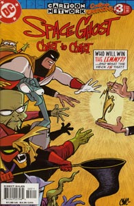
掲示板に書いた、Space Ghost Coast to Coastのコミック版。なぜかCartoon CARTOONSに収録されている。TVのSGC2Cはトーク番組（？）だが、こちらはストーリーものになっていて、けっこう楽しい。
特にこの回は悪役らも勢揃いの豪華キャスト。
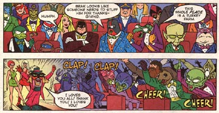
そしてホストは、あのUバード。
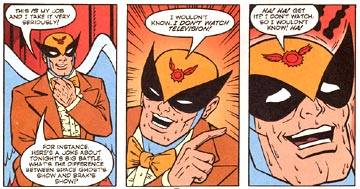
「えー、賞はゴーストとブラックの対決となりましたが、果たして勝者は？
なーんて、わかるわけねーよ。
だって、オレその番組観てねーーもん。はーっはは。観る気もねーし。うはうはうは」（訳てきとう）
などとホストにあるまじき発言をぶちまけるUバード。このあと強制退場させられます（笑）
かつてのヒーローと思えぬ、汗のかきっぷりが最高です。
あー、またSGC2Cのコミック再開してくんないかなぁ。
で、そのコミック版「Cartoon CARTOONS」ですが、このシリーズってちょくちょく仕切直しをしてシリーズタイトルが変わるからややこしい。
今月からは「CARTOON NETWORK BLOCK PARTY」というタイトルに。
ここんとこ、KNDがよく掲載されてますが、11月、12月にはビリマンも復活。
・・・とか昨日書いたんだけど、またサーバートラブルでアップできんかった。毎月大なり小なりトラブルばかり。ほんと、このレンタルサーバーは酷いな。マジで移転検討中。今度はCGIも使えるとこで。
パワパフ秋の新作祭りは10月の9日と10日の二日間でしたか。
自分の考えでは、季節ごとに小出しに新作を上陸させていくのではないかと思っているので、夏来スペシャルと同じく8本だと思ってた。
さて、今回は一日3時間半のスペシャルである。ということは7本か14本。
多分7本を二回ということなのではないかと思う。
7本？なんか中途半端だな？
今回はエピソード予告の情報もあるので、すこし検討してみた。
気になったのは、「第６０話 いとしのタネ」
「第５８話 キスはもうダメ（The Boys Are Back In Town）」が58話なのはアメリカのエピソードナンバーと同じ。しかし、「第６０話 いとしのタネ（Seed No Evil）」はエピソードナンバーでは61のはずである。どうも、この間のエピソードが抜けてるっぽい。こちらの新作紹介をみると、おねしょの話（Pee Pee G's）はやるみたいなので、そうなると・・・・・
＃59のロックオペラ「See Me, Feel Me, Gnomey」が抜けてる！！！
そうすると、7本という中途半端な数も説明がつきそうだ。そう、当初は夏と同じ8本の予定だったにちがいない。そして、ロックオペラもプログラムに入っていたのだ。だが、なんらかの事情により放送できなくなってしまい、7本という中途半端な数になってしまったのだよ。
謎はすべて解けたっっ！！
あれですかね、アメリカでもやってないのに、日本がぬけがけすんなっての！って本国から注意されたか？（笑）
まあ、これで当日全然違ってたら笑って誤魔化しますが。
◇
ねこみそさんとこで紹介されていたアニメ情報誌「PASH!」
「いい男の隠れ宝庫 SAMURAIアニメ特集」っての、サムライジャック載ってないかなぁ（笑）
のコメントに反応して、帰りに立ち読み。あたりまえのようにジャックのジャの字もありませんでした。
こんなものいらねーーーー。エミー賞とったのに！
その代わり、10月からは日本CNで忍者（？）アニメ「烈火の炎」が始まりますね！
これもいらねーーーーーー。
Toonamiだったらどうしようかと思ったけど、違うみたいだ。よかった。でも微妙な時間・・・Toonami拡大で組み込まれてたらやだなあ。
◇
なにかと騒がしい10月。
噂のあったTeentitansは残念ながら、やらないみたい。11月に流れたっぽいですね。まあ、当初の予想では12月だっただけに、それほどダメージは無し。どのみち収録は終わってるっぽいのでそのへんは安心している。
むしろ海外。10月からはビリマンの新作も始まるらしいのですが・・・
My Life as a Teenage Robotも10月1日から新シーズン開始!!!!!!
ついに！
The Teenage Roblog
にて。その下のシェルダンがキモイ。
さて、日本ニックでは予定通り10月から日本上陸できるのでしょうか？そっちも気になります。
（ていうか、ニックの webサイト更新おせーーーよーー）
さて、一方のディズニーチャンネルの10月は？
なんか新番組が始まるんですけど？？？？
「バーバリアン・デイブ」
どうも「Dave the Barbarian」ことのようだな。日本の紹介絵を見た時は、一瞬The Fairly OddParentsの人の作品かと思ったが、違った。ウィークエンダーの人のようだ。でも、絵柄えらい違うな。ティーモ・シュプリーモのように、人気作の絵柄をまねただけのパターンだったらやだなあ。
そんなことより、「コルドロン」放送ですよ！！
ディズニーの黒歴史に燦然と輝くあの作品が！すげえよディズニー。「なかったこと」にしてたわけじゃなかったんだね！観ないかもしれないけど・・・(笑)
番組としてはキムとフィルモア（と、たまにアラジン）くらいしか観ないチャンネルだけど、ネタとしては愛憎いりまじってなかなか楽しめる。こうやって、猿ロボ戦隊が来るまで見続けてしまうかも。
◇

ステキサイト発見。TeenTitansもあるのよー。JINXの絵もあるのよー。
こっそりとリンク追加。最近はリンクしてよいのかどうか悩むことけっこうあります。公表したいけど、あまりいろんな人には知られたくないと思ってるのかなあ・・・なんて思う場合も。
あと、私は平気でいろんなこと日記にも書いちゃうので、「これはやめて」と前もって言ってくれると助かります。空気読めない人ですから。
◇
パワパフのケータイサイトのコラムにこんなのがありました。
パワパフのモトネタはスペクトルマンにあるっっ！！
えーとですね、スペクトルマンに出てくる怪獣のなかに「ギラギンド」というやつがいるのですよ。
それがパワパフそっくり！！！ ってことなんですね。
どんな怪獣かといえば、こちらとかこちらとかこちらをご覧ください。目がパワパフ。
まあ、そもそもモジョ自体がスペクトルマンに登場する「宇宙猿人ゴリ」がモデルとか言う話だし、信憑性がなきにしもあらず・・・結論保留(笑)
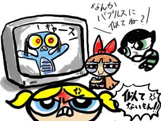
それでふと思ったのだが、ケータイサイトで「トーキングドック」の名でコラム書いてる「アメコミならなんでも知ってる」人って、もしかしてパワパフコミック日本語版の翻訳・コラムを書いている石川裕人ではないだろうか。そんな気がする。
ティーンエイジロボットでもスペクトルマンの像が出てきてたみたいだし、あちらのあの世代の人たちってけっこう見てたんだろうか。スペクトルマンというと、日本ではウルトラマン以下ミラーマン以上って感じの知名度だと思うのですが、どうなんでしょう。
◇
ビリマン放送再開。
海外でも10月から再び新作ラッシュが始まるようですね。気になるのはその新作一発目。
October 1: ﾒSuper Zeroesﾓ
これって、パワパフの 『カッコよくなりたい！（Super Zeroes）』と同じタイトル。なんか意味あんのかな？それともけっこうよく使われる表現なのかしらん。
内容的にはそれと同時にやる ﾒSickly Sweetﾓ が気になるんだけどね。
ビリーとグリムがマンディに愛の伝授？？？
おまけ：こんなとこにもグリム
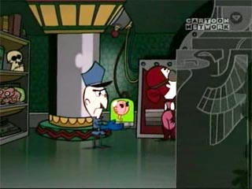
KND面白くなってきた！！
やっぱサンバンちゃんいいな。と、いいつつ、最近は1のウーノくんがかなりお気に入り。
しかし、日曜最後にやったティーンエイジャーの話は汚れた大人ほどドキドキする罠。
覗いた車がギリギシいってたらどうしようかと思ったよ。
「いいの？いいの？こんなの放送していいの？」
汚れてるっ！オリはもう汚れた大人になっちまった！
ハマグリ大砲の時思ったんだけど、KNDは大人と対決してるときより、秘密基地ですったもんだしてる話のほうが面白いなあ。
自分にはこの作品、CNよりニックのほうが合ってるように思える。なぜかセイフティーンクイーンとか思い出してる。あと、ヘイ！アーノルドとか。
◇
いよいよ、ビリマンが再開ですね。グリム！マンディ！あと一応ビリー!
さて、以前ビリマンには「マンディノーパン疑惑」なる説が囁かれておりました。果たしてそれは真実なのか？
・・・真実なのです。
すでに回答は第1話にて証明されているのですよ。ちょうど、もうじき始まるので、目をサラのようにして各自確認していただきたい。
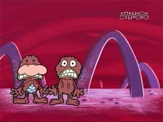
グリムとゲームをするためにリンポに行ったビリーとマンディ。ある意味全裸ですが(笑)、これではありませんよ、この次の瞬間です。見逃さないように！！
これだぁぁぁーーーっ！
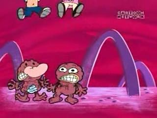
Σ(´Д｀ ）ﾊｲﾃﾅｲ！ Σ(´Д｀ ）ﾊｲﾃﾅｲ！ Σ(´Д｀ ）ﾊｲﾃﾅｲ！
みんなもコマ送りで確認汁！
こんなんアップして大丈夫かオレ・・・・
今日はヒタキさんの高校の文化祭に行って来ました。
今日は化粧してない女の人をいっぱい見たなあ・・・・
＜Σ(・ε・；) それがしょっぱなの感想かよっ！
あ、失礼。若い娘いっぱい見たなあ・・・・
＜Σ(・ε・；) エロオヤジかよっ！
ひとりツッコミしないと気恥ずかしくて書けません。
高校なんてもう十数年ぶりなもので、勝手に緊張しとったのですよ。確かに渋谷とかいけば若い娘さんたちはいっぱいいますが、「学校」という雰囲気はまた独特なものでして。学祭の活気というのもまた独特のものだし。すげえ久々に「ちょっと、男子〜」とかいう言葉を聞きましたよ。
「男子」とか「女子」とか、今じゃもうめったに耳に入らない言葉。
いやあ、なんか女子の数が多かったような気がしたんですが・・・私も共学だったけど、男子３：女子１くらいだったので、そう感じたのかなあ？それとも男子を見ても認識されてなかっただけですか？
違うぞ！違うぞ！そこのコレよんでるお前、ニタニタしたり、蔑んだりしたような目でオレを見るな！
あ、あれですね、ヒタキさんとこの漫研が女子部員ばかりだったからそう感じただけですね。そう、そう、そうに決めた。そうなんだよっ！（これ以上自爆しないようこのネタは終わりにしよう）
とりあえず目的は、ヒタキさんがこの日のため（？）に描いたという「TeenTitans本」のゲットです。（もうなんでもアリになってきたよ、オレ。だれか止めて・・・）
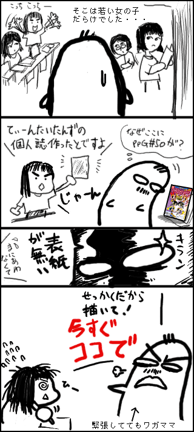
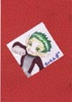←そうして描いてもらった表紙。
わがままですいません・・・・・
でもおかげで、かわいいBBたんの特製表紙になりましたよ！
わーい。ふふふ、言ったもの勝ち・・・。
あ、でも良く見たら、この本のタイトルないじゃん。
当然というか、なんというか他はやっぱり、鋼の錬金術師とかガンダムSEEDとかにハマリみたいで、ヒタキさん孤軍奮闘布教してるようでしたな。でもパワパフは他の子にも評判よかったとか。
この本は、そんなわけで、紹介本になってました。英語よめなくったってアメコミも楽しいよ！というアメコミ推奨漫画もあった（ちょっと涙）
それより、この本の漫画の一つ
この漫画のオチよりも、この次のコマの
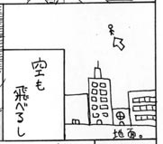
キャラ以外への愛のなさに笑ってしまいました。すんません。
本の他にもパネル絵もゲットー。
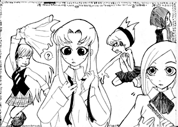
TT女の子ズ。
ちゃんとまんべんなく見てますよ。一点にだけ集中してるってことないですよ。
PpG秋の新作ｷﾀ━━━━(ﾟ∀ﾟ)━━━━ !!!!
PpGのDVD企画ぽしゃった〜(=TДT)
なんか嬉しいニュースと悲しいニュースがいっぺんに来たよ。
これが人生というものか・・・・・
新番組いろいろあるけど、やっぱりパワパフは自分の中では特別な存在。秋にやると前から分かってはいたものの、心拍数が上昇中です。あと１ヶ月・・・
ボーイズ復活！ ティーンエイジパワパフ！ おねしょガールズ！
◇
ひさびさにTV TomeのJanice Kawaye（ジェニー）さんとこの見たら、
Birth Name: Hiromi Kawaye
と、あった。うーむ、やはり日系人みたいですね。日本生まれかどうかは分かりませんが。
川江 宏美 とでも書くのだろうか。
そういや、去年もそんなこと書いたなあ・・・と思って昔の日記を読み返してみたら、
きっかり1年後に同じコトを書くなんて、ちょっと自分自身の偶然にビックリ。
それにしても、TeenTitansとTeenageRobot、同じような時期に始まって、同じような時期に日本上陸。でも、TTはすでに第三シーズンだというのに、MLaaTRはまだ第二シーズンすら始まっていない。制作ペースに大きく差がひらいたものだ。
◇
前からちまちまとやっていたリンクのメンテ作業。まだ中途半端だけど、公開しました。
とりあえず、ブックマークしてるとこをめったやたらに詰め込んでみました。ので、見にくいかも・・・
ジャンル分けとかテキトウです。サイトって生き物だから、リンクした当初と中身が変わっていたりすることがあって、コメント文とかジャンル分けってすぐ意味をなさなくなっていくので、無分別に並べようかとも思ったんだけど、ぶちこむ量が多すぎてわけわからなくなったので、便宜上ジャンル分けしました。
直感と思いこみと気分で分けたので必ずしも正しくないけど、見逃してください。気まぐれでちょこちょこ直したり追加したりします。
完璧版にしてからと思ったけど、いつまでたっても完成しないと思ったので、えいやっと更新。
あとはお気に入りのdeviantARTページ追加したいなあ。でもそれやろうと思ってdeviantARTにゆくと帰ってこれなくなるのよ・・・
やっぱり待ちきれない、我慢できない、気になってしょうがない。
アメリカ11日放送の TeenTitans｢Betrothed｣。
ってことで｢Animation Insider｣を覗く。
やっぱりお姉さま再登場！！！！
第三シーズン最高。
そうか、スターファイヤーのあの服ってヒーローコスチュームではなくて、民族衣装みたいなものだったのか・・・・タマラン星のムサイ男どもも、スターと同じ服着てる・・・・
キモッ！！（゜д゜;)
ついでだから、ジンクスの回も見る。えへえへえへへへへへ。
あっ！サイボーグがスカート履いてるぅぅぅ。ねこみそさんの夏コミでのおまけ漫画は予言だったのかあ！
って、ねこみそさんとこで、スターファイヤーのセーラー服絵が。眼福眼福。
そのTeenTitansのスタッフを引き抜いて作ったというディズニーのアニメ風カートゥーン「Super Robot Monkey Team Hyperforce Go! 」のクリップが見れるようになったようです。
うわーーーー、ディズニーじゃないみたいだ。なんか、サイボーグ009とロックマンを足したような作品。TTとは違う路線の日本アニメ風を狙うみたいなのは良いけど、ちょっと微妙。なんか操縦してるみたいだけど、巨大ロボットとかも出るんでしょうか？
さて、録画しておいたボトムズでも見るか。
バットガール求めてコカコーラを買い続けるも、全部「車」。
今日初めて人型だ〜って喜んでいたら、リドラー。もっそりと鬱。
バットモービル8台もあったって嬉しくないなあ。呪われてるのか？
呪われてるといえば、知り合いからこんな話が。
「オレのパソコン呪われちゃったよ！！マジどうしよう！」
「なんか、突然、画面にぽつっ、ぽつっと血痕が飛び散るんだよ。真っ赤な！」
「前は、あれ？気のせいかな？って思ってたんだけど、最近血痕の数が増えてきたんだぁ！」
そして今日
「うあーーー、ねえ、どうしよう。画面が一面血だらけに！」
「その血の海の画面からうっすらと文字が・・・」
なんて書いてあったの？
「ぬるぽ」
それウイルス。
どうやら知人は「ぬるぽウイルス」ってやつに感染したらしい。ってWinnyウイルスかよ。そんなの使ってるからだよ、知るか〜。
ただ、知人のやつはどうも従来のと違う亞種みたいだ。ふーむ、いろいろあるんだね。
どうもいまだにMacOS9をメインで使ってるせいか、その手の話題にはうとい。
よくわかんないけど、ワクチンソフトかければええんじゃないの？って言っておいた。急いで買いに行ったようだ。って、対ウイルスソフトもなくそんなのやってたのかよ！凄いな。
それにしても、このてのものはMacはもはやおいてけぼりだ。ちょっとうらやましい。OSXならそういう心配もあるのかな？
最近流行のブログですが、MacIE環境ではまともにみれないスタイルシートを使ってるとこが増えてきた。まるでIBMのホームページビルダーの 「どこでも配置モード」で作ったサイト並だ。あれは酷い。困る。
あ、ちなみにビルダーの「どこでも配置モード」が酷いだけで、「標準モード」で作る場合は、ビルダーは優れたソフトです。初心者ほど「標準モード」でサイト構築してほしい。
メールで情報いただいたのですが、TeenTitans 10月開始！？
昨日、DVDでちゃうから早く放送してくれ〜と言ったとたんにコレですか。さすがCNそつがない。
まだ公式のものではないですが、それもしばらく待つだけ。今度のCNの更新が楽しみです。
そうか、CNマガジンメールの「あれ」ってのは「これ」だったんですな！
となると、もしかしたらパワパフの新作は11月かも。ちょうどDVDも出るころだし。でも、やっぱり10月だったりしたらえらいことですよ！
ティーンエイジロボットも10月って話だし、（大丈夫かあ〜ニック）たまらん10月になりそうだ。たまらん、たまらん、タマラン星。ジェニーも大喜び大回転。
TeenTitansといえば、第29話: Betrothed やっぱ、うる星やつらを思い出しちゃうよなあ。スターファイヤーラムちゃん説が私の中でより強固に。スターが飛ぶシーンにはぜひとも「とぅるるるる」という効果音を。
ついでにKNDと比較
リーダー：ロビン、Num1
メカ担当：サイボーグ、Num2
天真爛漫：スターファイヤー、Num3
ショタ：ビーストボーイ、Num4
クール：レイヴン、Num5
おお、見事な対応！・・・・てことはやっぱりNum2は負け組か(笑)
行き場がないからって、JINXに手だしたら殺す。
すげえ久々にブランドン・スモールのサイト覗いたら、「ホームムービーズがDVD化」だって。なぜかアダルトスイム系のほうがDVD化しやすい謎。
そろそろ海外toonDVDまとめ買いの準備かねえ。SGC2Cの2巻目ももうじきだったっけ？
そのついでに買おうか迷ってるDVDが・・・
Totally
Spies
だって、なんか絶対続き来そうもないじゃない。いまだしぶとく放送されてるトータリースパイズですが、第2,第3シーズンとか凄く気になるの。カートゥーンってこのあたりのシーズンから面白くなるパターンが多いので、どうなってるのか気になって気になって。でも、買うほどでもないかと、お悩み中。びみょーー。
そーいや、アレックスの中の人シーズン3から変わっちゃったんだっけ。たしかUS版セーラームーンのレイちゃんの人だったっけかな？調べてみると・・・お、正解正解。
って、サムはJennifer Haleだったんですな。（キーン先生＆プリンセス）これから出てくるであろうKNDのナンバー86もそうか。
はっ！ていうかTeenTitansのDVDが9/28からじゃん！
えらくサッパリした顔のスターファイヤー・・・
日本でもアマゾンでビデオなら買えるみたいですね。（安っ〜）おいおい、はやく放送してくれよ、日本CNさんよぉ。買っちゃうよ。
ビデオはどんだけ入ってるかわからんけど、DVDは"Final Exam" "Sisters" "Divide
and Conquer" "Forces of Nature" "The Sum of His Parts"
"Nevermore" の6本みたいだね。
高画質でJINXとブラックファイヤーお姉さま！やべえ、ムラムラと散財の気配。
話は変わって、最近PpGが最初からリピートし始めたので、見続けてるんですよ。もう何回も見てるってのにやっぱりおもしれえ。初期のアナログっぽい描線と、デザインチックになる前のゆるいガールズもええなあ。
バタカの恋バナですよ。やっぱタマランですよ。で、ちょっと気になったことが。
この話じゃなくて、その前にやってたアメーバーボーイズ登場の回。
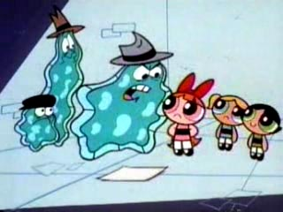
やっぱりっっ！！！！！
バターカップだけ笑ってる！！
いつもはこの逆でしょ。みんなが笑ってるとこでバタカ一人しかめっつら。でも逆。
そうだよ、バターカップはこきたないやつ好きなんだよ。そうだったのかあ。これは伏線だったのですね。マクラッケン恐るべし。
ちなみに、この後の「ゴミ捨てたぜ！」ではバブルスが笑ってバターカップが怒ってるといういつものパターン。うーむ、しかしバカは嫌いと。（バブルスはバカ好きかもしれない）
本日のdeviantARTめぐり
bleedman 作業プロセスのスクリーンショットが。「なに使ってどうやって描いてるの？」とか質問あったんでしょうか？それよりアトミックベティやFHFIFがこっそり描かれているのに驚き。今後登場するん？
poofler「teen PPG」 ていうか、パワーパンクガールズかと思った。
NeoSlashott「Icky Vicky Comic 5」これ見ると妖精夫婦がどんどん見たくなる。「MLAATR- BVolleyball Conflict」ジェニーの水着のおしりがかわいい。
KNDハチャメチャ大作戦＃1,＃2
ついに始まりましたね。カートゥーンカートゥーンショーで流れたパイロット版（プールの話）がそのまま使われてましたね。ビリマンの時もそうだったので、最近のシリーズはそういうものなんでしょう。
とりあえず感想としては、「まあ、こんなものか」
どうもここ最近のカートゥーンの特性をみると、初回あたりは「まあまあ」だったのが、キャラがなじんでからグングン面白くなってゆく傾向があるので、一応この先も楽しみにしています。とりあえず今回分では「ナンバー1が留守の話」がけっこうおもしろかった。ナンバー4ってあんなキャラだったのか！
ナンバー2はTeenTitansでいえばサイボーグのポジションにいそうで、どうも地味っぽいような。
ナンバー3ことわれらがサンバンちゃんは、まだまだ暴れっぷりが足りない様子。噂で聞くにはもっとハジケてるみたいなので、今後のエピソードに期待だ。あー、でも英語の声もかわいいな。さすがJINXの中の人。
日本語の吹き替えは（小暮英麻）カートゥーン的に言うなら、ロッキー＆ブルウィンクルのロッキーくん。
問題は・・・ナンバー5ですよ。
日本語の吹き替えキャスト阪口周平って、男じゃん！！！しかもクイックシルバーかよ！！
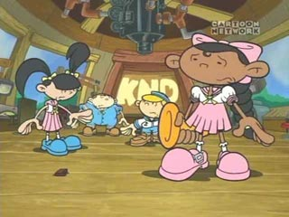
ほらっ。れっきとした女の子なんですよ。男声はあんまりですよ。
原語はティーンエイジロボットのTiffと同じCree
Summerさん。いくら声がハスキーで独特なしゃべり方であろうとも、その中にやはりキュートさが隠されておるんですよ。ここはがんばってダミ声だして女性の方でやって欲しかった。
ていうか、どうしてこんなことになったのかさっぱりわかりません。あ り え な い。
これにはちょっと頭かかえたよ。てか、これって後々ヤバくない？
【KND日本語吹き替えキャスト】
Numbuh 1 鈴木正和
Numbuh 2 柴田創一郎
Numbuh 3 小暮英麻
Numbuh 4 中村俊洋
Numbuh 5 阪口周平
それはさておき。
みなさんお待ちかね（？）のあの本がいよいよ11月に発売ですよ！
うひょーーーっ。カッコええですねー。
40年近い年をへて、宇宙怪人のオリジンがついに語られるっ！！！！
バットマンフギュアめあてにコカコーラを買ってるんですが、3つ買って3つとも古いバットモービルってのは、どーいうことよ。私はただバットガールが欲しいだけなのにぃ。
テクリさんのサイトでカナダのコミコンレポートが掲載された。
インターネットっていいなあと思うことはたくさんあるけど、これなんかもそうだ。
アメリカのコミコンなんかはそれなりにメジャーなので、ちらほらと情報が入ってくる。でもカナダはなかなか知らないんだよねえ。そこにこんな楽しいイベントレポートがあると嬉しくなってくる。
また、テクリさんの絵が上手いからよけいに楽しい。
とりあえず、テクリさん画のコスプレGAZはお持ち帰りすることに(笑)
ところで、そこに書いてあったジョン・Kのスーパーヒーローアニメ見たいなあ。激しく狂ってそうだ。
そういえば、最近のカートゥーンは制作がカナダのスタジオってことが多いと聞く。だからなんだ、ってわけでもないんだけど、カナダもけっこうなカートゥーン制作国。オーリーズ・アドベンチャーもカナダ製だが、もっといっぱいあるはずなので、もっと紹介されないものだろうか。ただ、今のトコ特に興味をひくモノはないのだが・・・・そのうちトンデモナイものが出てくることをちょっと期待している。
ところで、もう一つのアメリカのお隣、メキシコでのアニメ事情ってのはどーなんだろうかね。
こっそりとブログサービスおためし中。やっぱり投稿するタイプはちょっとめんどいな。慣れかとは思うが。
操作性のいいやつはないだろうか。あと、投稿型だとデータは基本的にはサーバ上にあるので、手元に残らないのがなんかもったいない。FTPで投稿とかできんものだろうか。
欲しい機能といえば、コメントが入るとメールに転送される機能。あとブログのデータそのものをローカルに落とせる機能。もしブロクサービス乗り換えることがある場合、それがあったら移植が楽そうだから。
・・・・やっぱり自前になるのかなぁ。でも、いまさらサーバ移転はめんどうだ。とりあえず自分の理想型を模索中。
ドリーム・イン・スタイル いつのまにか、募集していたパワパフモデルの人気投票が始まっていた。
上段メニューの三人組アイコンをクリックすると表示される。
・・・・・・むううううううううううううううううう ( -Д-)
ここから選べと？応募された方には罪はないですが、私は押せませんでした。げはっ。
メールでまた新たなパワパフコスプレをしたサイトを教えてもらったので、そっちで目をなごませる。
パワパフのコスプレ自体の似合う似合わないとかは、関係ないんです。パワパフのコスプレをしようという心意気が好きなのさ。ドリーム・イン・スタイルのモデルさんもはやくコスプレしてくんないかな。
「ブーンドッグス」
まさかこのアメコミの翻訳版が出るとは思いもしなかった。幻冬舎か、なるほど。マイケル・ムーア効果が追い風になったのは間違いないね。アメコミが紹介される幅がひろまったの良いこと。
ちょっと読んだことはあるんだけど、それほどグッとはこなかった。こなれた日本語で読めばもう少し感じが違うかな？
しかし、この表紙はいただけないな。コミックのタッチはけっこう日本のMANGAの影響があって、カワイイキャラとか絵とかも多いんだけど、この表紙はいかにも挑戦的だ。サウスパークとかのように、かわいらしさを見せながら、内容はハードブラックってほうが落差があって楽しいんだけどなあ。社会派だけど、基本的にはギャクなので、個人的にはそっちで売ってほしかった。これでは重すぎる。幻冬舎の好みだろうか。
とはいえ、やっぱり新聞漫画はどうもハマれない。スヌーピーも、ガーフィールドも、ディルバートも好きなんだけど、なぜかアメリカの新聞漫画ってシニカルなものが多い。そのシニカルさ魅力だけど、それゆえ熱くなれない。私はちょっと「つっこめる」余地があるほうが好きかも。
最近ブログ話ばかりですんません。
レンタルブログで狙っていたJUGEMが新規会員募集停止。
goo BLOGはしょぼいし、livedoor
Blogは・・・実はあの会社あんまし好きじゃないし、
まあどのみちシンプルにするつもりなんで、どこでもいっしょっていえばいっしょなんですけどね。
ヤプログでもいいかなあ？ こーいうの、意外に事前に比較調査して悩むタイプなんです。
いいかげん見る前に飛べよ。
ちなみにサーバ移転の場合狙ってるのはロリポップかパルフェ。 パフォーマンスのわりに安いしね。安定性はどうなんだろ。そこらへんはやってみないとわからんなあ。でも、今使ってるサーバよかましかな。
話は変わって、スーパーミルクちゃんのサイトを久々に覗いたら、「リニューアルします！」の告知が。
でも、「リニューアルOPENは8月半ば予定」って言ってるけど、もう9月じゃん・・・
まあ、こういうのってアテに出来ないのはありがちなんだけどね。それより、反響しだいで新作が制作されるかもってのが気になります。見たいなあ。
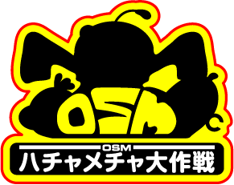
てなわけでついでに作ってみた。パワパフ版よか58％手抜き。大統領とかアイパッチ博士とか追加して5人にしときゃよかったけど、めんどくさくて・・・だからミルクちゃんでかすぎ。いちおうダブダブ袖つながりで・・・・どうよ。
ちきしょう！オレもblogやるぞっ！
調べてみたら、ウチのサーバーMYSQLところかCGIすら使えなかった・・・・ダメジャン。
選択肢としては、サーバー移転する。レンタルブログを利用する。
うーむ、あちこちでやってるサービスのブログにするかねえ。でも調べてみると人気のとこって、やっぱり鯖落ちしたり激重だったりするみたいで、ゲンナリ。まあ、ブロガーが急激に増えてサーバーの増強がおいつかないってとこだろうけど。重いのはやだなあ。
てなわけでしばらく様子見。
代わりといってはなんだが、Googleの検索窓をつけてみた。
自分でもいつの日記にナニを書いたのかすっかり忘れていることが多いので、役にたつかなと。
{kind=link}